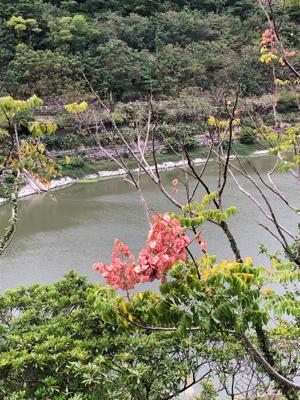
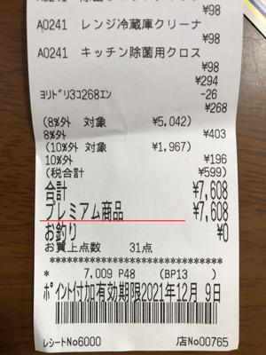

うるがいの話 ある日
最新: 吸引ポンプ【うるがいの話 ある日】とは 一日だけのプログです
『うるがいの話』の最新一日だけのプログで、通信料が少なく経済的だ。カニの画像をクリックすると全ての日付が載る『うるがいの話』サイトを表示します
|
|
【うるがいの話】 うるがい(ｳﾙｶﾞｲ urugai)とは、『もずくがに』の名前でとても大きくなります。 |
|---|---|
|
|
【カミマヤーの話】 猫のことを方言でマヤーといいます。カミマヤーとは、神の猫のことです。 |
|
【タナガーの話】 たながー（ﾀﾅｶﾞｰtanagaa）とは手長えびのことで、何種類かあり大きいのは車 エビぐらいになります。 |

|
【ぶながぁの話】 ぶながー(bunagaa)とは、赤い髪の毛、赤い身体、そして身長は１ｍ２０ｃｍ ぐらい、川の蟹を食べているの目撃された。場所は沖縄県国頭郡大宜味村のと ある村僕の隣近所に住んでいる爺さんから、聞いた話です。 |
|
|
【ギーマの話】 ギーマ(giima)とは、山原の里山に咲くスズランに似た、 花を付けます。実は食べられます、 気が付くと口の周りが紫になっています。 |
2021年12月06日 (月）吸引ポンプ
17:05
 
昨日の夕方、子供から便器が詰まったとヘルプ、家にある二つの吸引ポンプを
もってアパートへ行く。便器は綺麗だが・・・・、とりあえず家から持ってき
た吸引ポンプで吸引してみる。が、なかなか詰まりが取れた感じがしない。子
供が、そばから同じ事を何度もやったよ！という。フーン、試しに水を流して
みてと言うと、子供がレバーハンドルを廻す。みるみる水は溜まり、あと少し
で便器から溢れそうになった。その状態で、吸引ポンプで吸引してみると数分
後、詰まりがとれた。アパートについて僅か５分の出来事、金曜日の夜から詰
まり、吸引ポンプで詰まりを無くそうとしたがだめで、トイレは近くにあるコ
ンビニなどで済ませたらしい。昨日は、朝から食事はとらなかったとの事、早
めに連絡してくれれば・・、何度か経験済、年の功である。水がもったいない
のか大で流さず、小を使ったからかな？ととんでもないことを言っていた。
サンエーでなは買エール商品券を利用する。ほほう、こうすればできるのか事
前に手順を調べてはいたが、店員さんもあまり慣れていないのか互いにモソモ
ソしてしまった。何事も、実践である。
１６時５８分 ビットコインの総資産 ￥１５，８６０